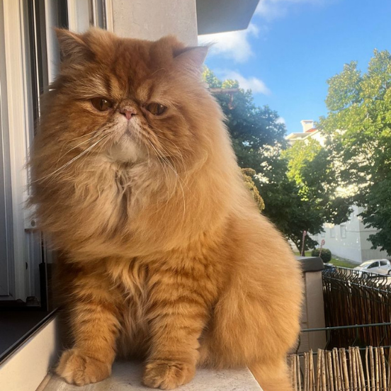

O gato Persa é conhecido por sua aparência elegante, seu rosto achatado e sua pelagem longa. É uma raça tranquila, perfeita para quem gosta de gatos mais calmos e carinhosos.
Os persas adoram ambientes confortáveis e costumam passar bastante tempo descansando. Apesar do jeito calmo, eles também gostam de receber carinho e atenção.